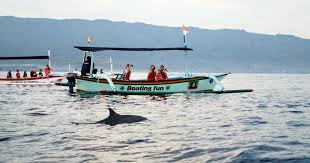
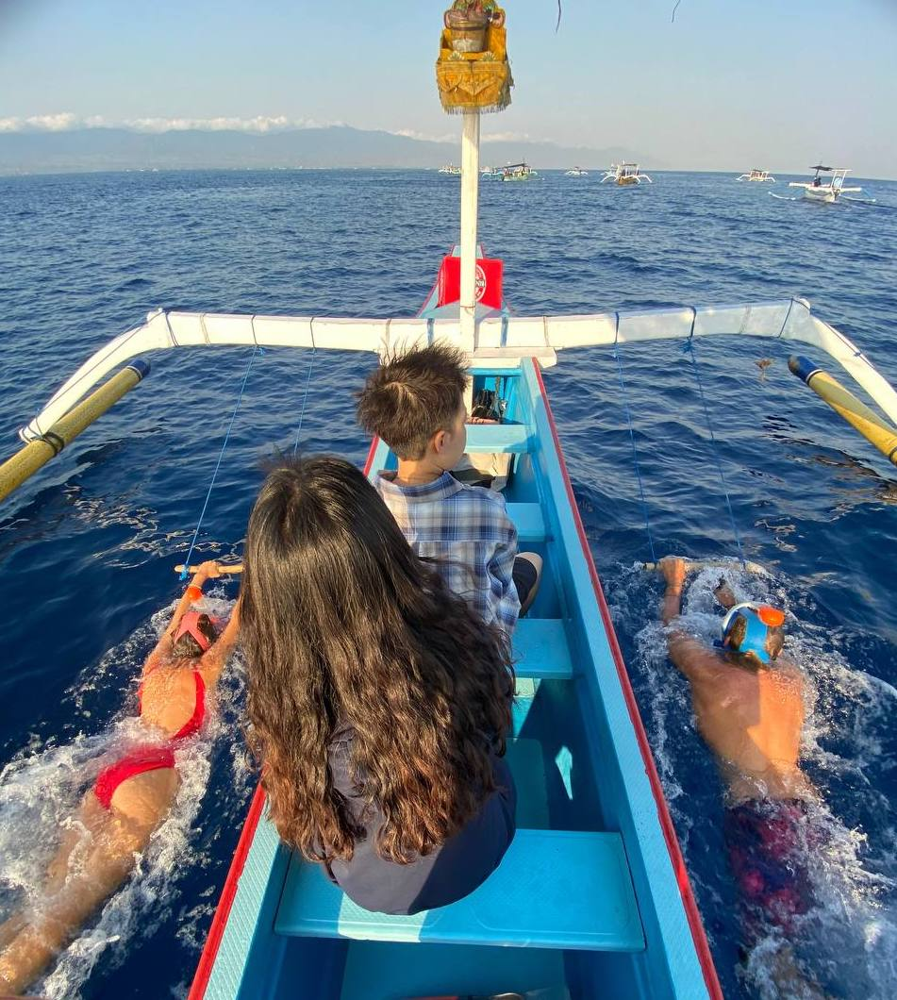
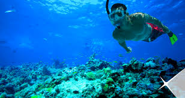
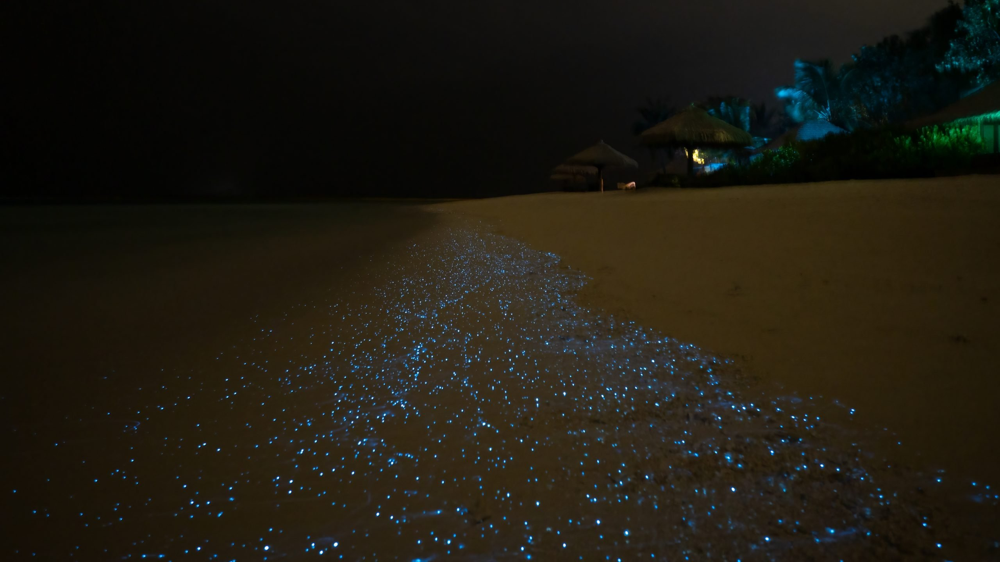

Service
Watching Dolphin
Welcome to a unique and unforgettable dolphin watching experience! Our service offers the rare opportunity to see dolphins in their natural habitat. By joining this tour, you will be invited to enjoy the beauty of nature while observing the cheerful and intelligent behavior of dolphins.
Service Details:
| Time | :Start from 06.00am |
| Duration | :2 - 3 Hours |
| Price | :Rp150rb/Person |
Swimming
Enjoy a magical and amazing experience with swimming with dolphins! This service offers the exclusive opportunity for you to directly interact and swim with these intelligent and friendly sea creatures in a safe and controlled environment.
Service Details:
| Time | :Start from 06.00am |
| Duration | :2 Hours |
| Price | :Rp150rb/Person |
Snorkeling
Welcome to an amazing snorkeling experience with us! Our snorkeling service offers the opportunity to explore underwater beauty full of color and life. Enjoy unforgettable moments with stunning views of coral reefs and a variety of marine life.
Service Details:
| Time | :Start from 06.00am |
| Duration | :2 Hours |
| Price | :Rp150rb/Person |
Sunset and Plankton
Enjoy a magical experience that combines the beauty of a sunset and the magic of bioluminescent plankton. Our sunset and plankton watching services offer a unique opportunity to enjoy stunning and enchanting natural views at night.
Service Details:
| Time | :Start from 06.00pm |
| Duration | :3 Hours |
| Price | :Rp200rb/Person |